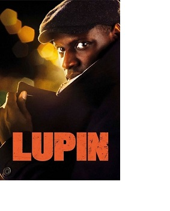
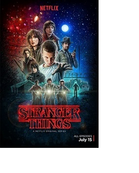
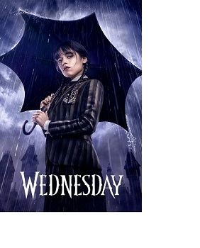

??????
Lupin

La historia sigue a Assane Diop, una persona que ha crecido con las historias de este célebre ladrón literario.
Cuando éste descubre que la muerte de su padre va más allá de lo que creía, se involucra en una red de criminales que hará que se dedique a su gran pasión: el robo.
Assane Diop creció junto a su padre en una gran mansión donde éste trabajaba como chófer de una familia adinerada.
Sin embargo, el destino de su padre se vio oscurecido cuando es acusado injustamente del robo de un preciado collar, el mismo que intenta robar Assane Diop años después cuando ya es un adulto y tiene un hijo.
Articulos relacionados
 |
 |
|
| Stranger Things |
Wednessday |
Lupin |